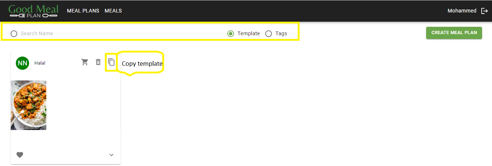
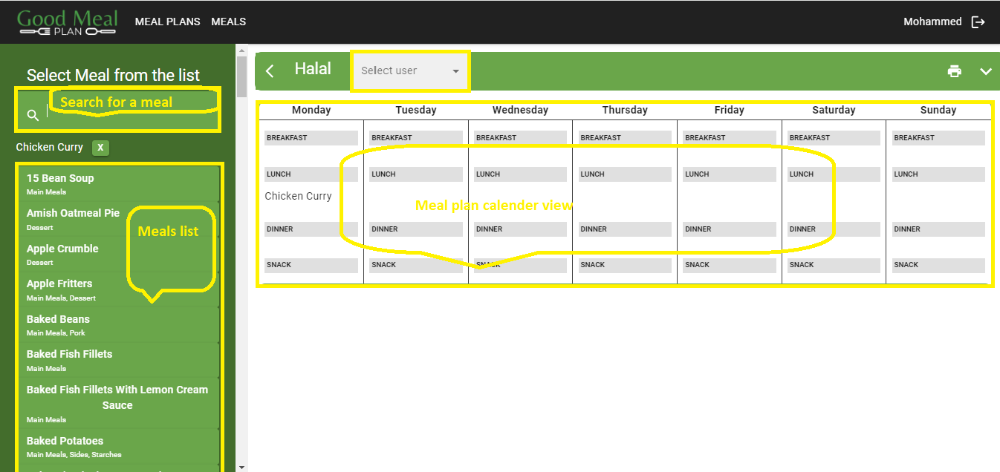

Create a Meal Plan from a Template
Overview
Creating a meal plan from a template allows users to quickly generate meal plans based on predefined meal templates. This documentation provides step-by-step instructions on how to create a meal plan from a template and assign it to a user.
Usage
-
Navigate to the 'Meal Plans' Page
- Open your web browser and go to GoodMealPlan
- If you're not already logged in, sign in to your account
- Once logged in, you'll be directed to the meal plans page
-
Selecting a Template to Copy
- Select a template from the available meal templates or use the search option to find a specific template
- Choose the template you want to use as the basis for your meal plan
- Click on the option to copy or duplicate the selected template
- This action creates a new meal plan from the template that you can customize later on
 Screenshot: Copy a Template
- Customize Meal Plan
- Navigate to the meal plans page
- Assign the meal plan to the intended user
- Perform any modification to the meal plan as required
 Screenshot: Customize Meal Plan
Additional Notes
For any questions or assistance, please contact your administrator